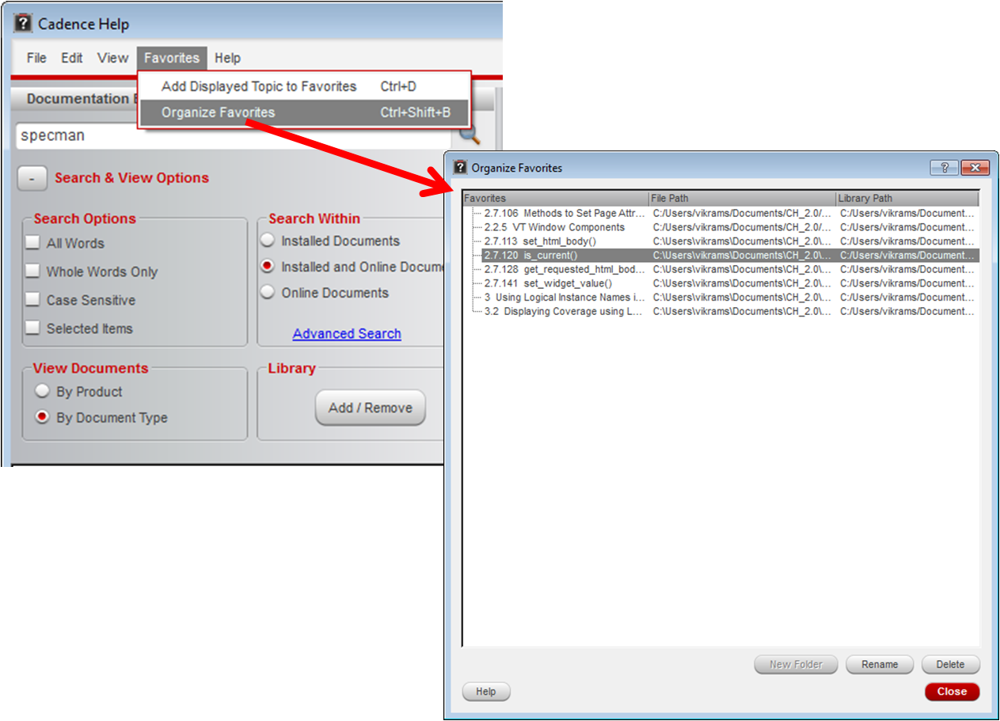

You can click Favorites from the menu bar to add the displayed topic to favorites or to organize favorites.
Organize Favorites
You can use the Organize Favorites option to:
- Rename a topic
- Reorder a topic through drag and drop
- Delete a topic
- Create new folders or subfolders to sort favorites